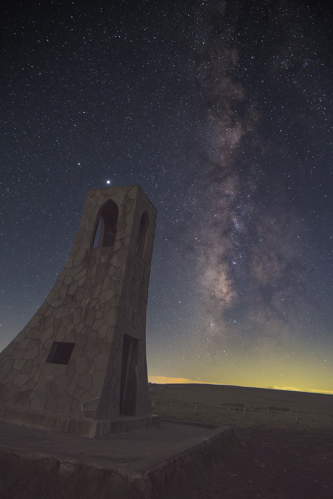
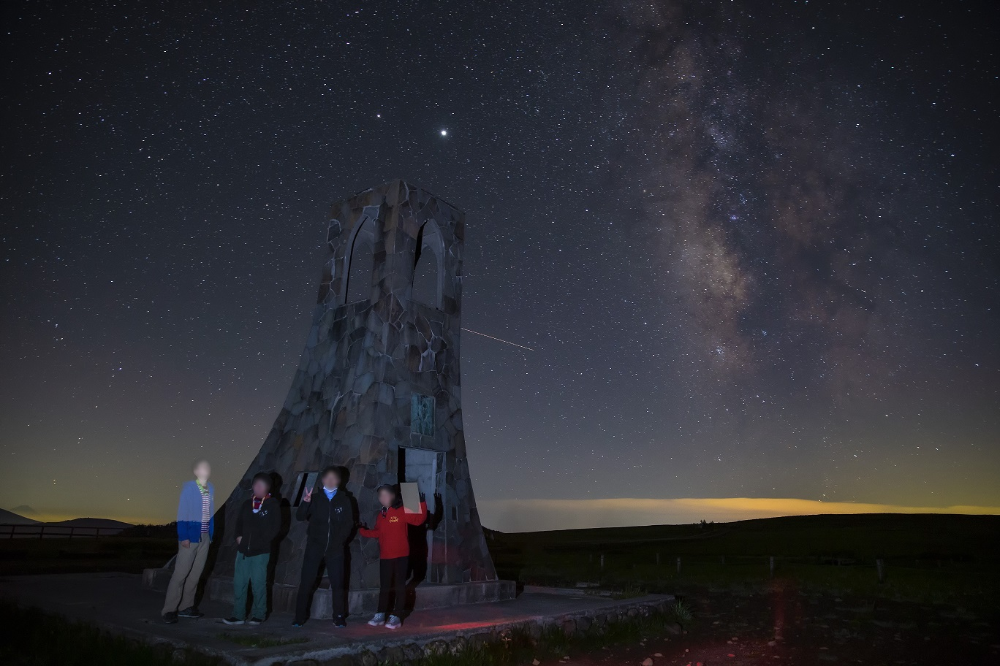
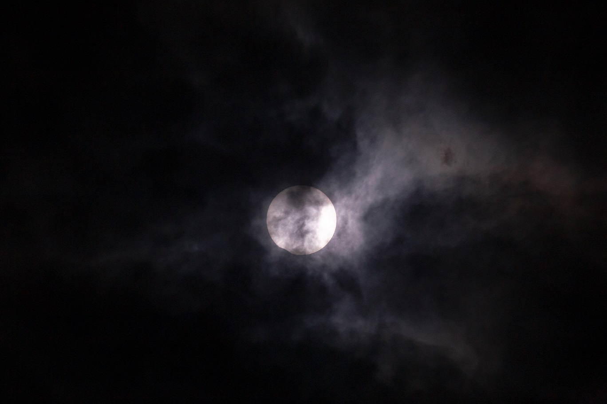
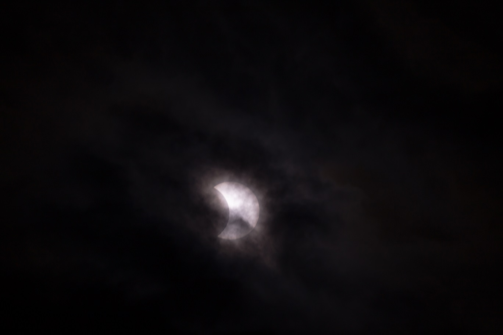

<!DOCTYPE html>
<html>

<head><meta name="generator" content="Hexo 3.8.0">
  <meta charset="utf-8">
  
  <title>【遠征記】2020年6月 美ヶ原，それと部分日食 | ほしよみ大学生のブログ</title>
  <meta name="viewport" content="width=device-width">
  <meta name="description" content="あいさつこんにちは．一応緊急事態宣言は明けているものの大学も基本的に入れず，家で引きこもっている私です．本当に半年早期卒業することになってしまったので修論をヒーヒー言いながら書いています．そんなでも本能には抗えず，星見の誘いを目にしてしまったのでホイホイ美ヶ原まで行ってきてしまいました．あと日食も撮ったので，それについても少し書き留めておきます．">
<meta name="keywords" content="写真,天体写真,遠征記">
<meta property="og:type" content="article">
<meta property="og:title" content="【遠征記】2020年6月 美ヶ原，それと部分日食">
<meta property="og:url" content="http://dabokun.github.io/2020/07/02/00000034-2020-06-summary/index.html">
<meta property="og:site_name" content="ほしよみ大学生のブログ">
<meta property="og:description" content="あいさつこんにちは．一応緊急事態宣言は明けているものの大学も基本的に入れず，家で引きこもっている私です．本当に半年早期卒業することになってしまったので修論をヒーヒー言いながら書いています．そんなでも本能には抗えず，星見の誘いを目にしてしまったのでホイホイ美ヶ原まで行ってきてしまいました．あと日食も撮ったので，それについても少し書き留めておきます．">
<meta property="og:locale" content="ja">
<meta property="og:image" content="http://dabokun.github.io/2020/07/02/00000034-2020-06-summary/card.jpg">
<meta property="og:updated_time" content="2020-07-03T10:54:09.539Z">
<meta name="twitter:card" content="summary_large_image">
<meta name="twitter:title" content="【遠征記】2020年6月 美ヶ原，それと部分日食">
<meta name="twitter:description" content="あいさつこんにちは．一応緊急事態宣言は明けているものの大学も基本的に入れず，家で引きこもっている私です．本当に半年早期卒業することになってしまったので修論をヒーヒー言いながら書いています．そんなでも本能には抗えず，星見の誘いを目にしてしまったのでホイホイ美ヶ原まで行ってきてしまいました．あと日食も撮ったので，それについても少し書き留めておきます．">
<meta name="twitter:image" content="http://dabokun.github.io/2020/07/02/00000034-2020-06-summary/card.jpg">
<meta name="twitter:creator" content="@dabo_pic">
  
  <link rel="alternative" href="/atom.xml" title="ほしよみ大学生のブログ" type="application/atom+xml">
  
  
  <link rel="icon" href="/images/favicon.png">
  
  <link rel="stylesheet" href="/css/style.css">
  <!--[if lt IE 9]><script src="//html5shiv.googlecode.com/svn/trunk/html5.js"></script><![endif]-->
  
</head></html>
<body>
  <div id="container">
    <div class="mobile-nav-panel">
	<i class="icon-reorder icon-large"></i>
</div>
<header id="header">
	<h1 class="blog-title">
		<a href="/">ほしよみ大学生のブログ</a>
	</h1>
	<nav class="nav">
		<ul>
			<li><a href="/">Home</a></li><li><a href="/categories">Categories</a></li><li><a href="/tags">Tags</a></li><li><a href="/archives">Archives</a></li><li><a href="/about">About</a></li><li><a href="/work">Work</a></li>
			<li><a id="nav-search-btn" class="nav-icon" title="Search"></a></li>
			<li><a href="https://github.com/dabokun"></a>
			</li>
			<li><a href="https://twitter.com/dabo_pic"></a></li>
			<li><a href="/atom.xml" id="nav-rss-link" class="nav-icon" title="RSS Feed"></a>
			</li>
		</ul>
	</nav>
	<div id="search-form-wrap">
		<form action="//google.com/search" method="get" accept-charset="UTF-8" class="search-form"><input type="search" name="q" class="search-form-input" placeholder="Search"><button type="submit" class="search-form-submit">&#xF002;</button><input type="hidden" name="sitesearch" value="http://dabokun.github.io"></form>
	</div>
</header>
    <div id="main">
      <article id="post-00000034-2020-06-summary" class="post">
	<footer class="entry-meta-header">
		<span class="meta-elements date">
			<a href="/2020/07/02/00000034-2020-06-summary/" class="article-date">
  <time datetime="2020-07-02T14:10:47.000Z" itemprop="datePublished">2020-07-02</time>
</a>
		</span>
		<span class="meta-elements author">astr0dab0</span>
		<div class="commentscount">
			
			<a href="http://dabokun.github.io/2020/07/02/00000034-2020-06-summary/#disqus_thread" class="article-comment-link">Comments</a>
			
		</div>
	</footer>
	
	<header class="entry-header">
		
  
    <h1 class="article-title entry-title" itemprop="name">
      【遠征記】2020年6月 美ヶ原，それと部分日食
    </h1>
  

	</header>
	<div class="entry-content">
		
		
		<div id="toc" class="toc-article">
			<p class="toc-title">目次</p>
			<ol class="toc"><li class="toc-item toc-level-3"><a class="toc-link" href="#あいさつ"><span class="toc-number">1.</span> <span class="toc-text">あいさつ</span></a></li><li class="toc-item toc-level-3"><a class="toc-link" href="#晴れの美ヶ原"><span class="toc-number">2.</span> <span class="toc-text">晴れの美ヶ原</span></a></li><li class="toc-item toc-level-3"><a class="toc-link" href="#部分日食"><span class="toc-number">3.</span> <span class="toc-text">部分日食</span></a></li></ol>
		</div>
		
		<h3 id="あいさつ"><a href="#あいさつ" class="headerlink" title="あいさつ"></a>あいさつ</h3><p>こんにちは．一応緊急事態宣言は明けているものの大学も基本的に入れず，家で引きこもっている私です．<br>本当に半年早期卒業することになってしまったので修論をヒーヒー言いながら書いています．そんなでも本能には抗えず，星見の誘いを目にしてしまったのでホイホイ美ヶ原まで行ってきてしまいました．<br>あと日食も撮ったので，それについても少し書き留めておきます．</p>
<a id="more"></a>
<h3 id="晴れの美ヶ原"><a href="#晴れの美ヶ原" class="headerlink" title="晴れの美ヶ原"></a>晴れの美ヶ原</h3><p>6月16日の昼過ぎに，知り合いの方から星見の誘いがありました．ガチガチの撮影はせず，ふらっと見て帰ろうという話です．当然僕は修論があるので無理！と言うつもりだったんですが，星見の欲には抗うことができず行くことにしました．お誘い頂いた方は別働隊で，我々はサークルでの後輩の家車で，他に参加してくれた後輩2人も連れて夜21時頃の東京を出発しました．</p>
<div class="twitter-wrapper"><blockquote class="twitter-tweet"><a href="https://twitter.com/dabo_pic/status/1272915642753024000" target="_blank" rel="noopener"></a></blockquote></div><script async defer src="//platform.twitter.com/widgets.js" charset="utf-8"></script>
<p>最近天城ばかりだったので本当に久々に美ヶ原に行きました．しかもめちゃくちゃ晴れている．こんな美ヶ原は一年以上ぶりです．到着はとうにてっぺんを回っており，天の川が垂直に立とうとしている頃でした．とても良い空だったので，美しの塔まで行って少し撮影しました．</p>
<p></p>
<div style="text-align: center;"><br>”空に伸びゆく”<br>2020年6月17日 午前2時35分～ 美ヶ原にて<br>Canon 24-70mm F2.8L II USM（24mm）<br>Canon EOS 6D<br>三脚使用<br>前景：ISO 12800 / F3.2 / 25s * 8 加算平均<br>背景：ISO 3200/ F3.2/ 25s * 1<br>ステライメージ8 / Adobe Lightroom CC / Photoshop CC<br><br><br><br></div>


<p></p>
<div style="text-align: center;"><br>”車のメンツで集合写真も”<br>2020年6月17日 午前1時56分～ 美ヶ原にて<br>Canon 24-70mm F2.8L II USM（24mm）<br>Canon EOS 6D<br>三脚使用<br>ISO 3200/ F3.2/ 25s * 1<br>Adobe Lightroom CC / Photoshop CC<br><br></div>

<p>その後3時過ぎには出発して，結局朝の7時半頃には東京に到着というスピード感で帰ってきました．まるで夢の中にいたみたいだ…．運転してくれた後輩には感謝です．<br>7月の新月期はある程度執筆も片付いているはずなので，晴れたら山梨，長野方面に行きたいと思います．ウイルス関連の現状が悪化して，外出の規制が強化されないことを祈るばかりです．</p>
<div class="twitter-wrapper"><blockquote class="twitter-tweet"><a href="https://twitter.com/dabo_pic/status/1272969943819018240" target="_blank" rel="noopener"></a></blockquote></div><script async defer src="//platform.twitter.com/widgets.js" charset="utf-8"></script>
<h3 id="部分日食"><a href="#部分日食" class="headerlink" title="部分日食"></a>部分日食</h3><p>話は変わって，美ヶ原に行った数日後には部分日食がありました．今回初めて太陽を撮影するということで，多少準備をする必要がありました．<br>Baader さんのアストロソーラーフィルターを購入し，FSQ（85mm），カメラ（82mm）用に少し工作．余った部分のうちレンズには使えなさそうな部分で簡単な観察グラスを作って，残りは単身赴任の父親にあげました．父親も X7 を持っていまして，赴任先で撮影していたようです．</p>
<div class="twitter-wrapper"><blockquote class="twitter-tweet"><a href="https://twitter.com/dabo_pic/status/1273291294878523392" target="_blank" rel="noopener"></a></blockquote></div><script async defer src="//platform.twitter.com/widgets.js" charset="utf-8"></script>
<div class="twitter-wrapper"><blockquote class="twitter-tweet"><a href="https://twitter.com/dabo_pic/status/1273302745437450240" target="_blank" rel="noopener"></a></blockquote></div><script async defer src="//platform.twitter.com/widgets.js" charset="utf-8"></script>
<div class="twitter-wrapper"><blockquote class="twitter-tweet"><a href="https://twitter.com/dabo_pic/status/1273505495052021760" target="_blank" rel="noopener"></a></blockquote></div><script async defer src="//platform.twitter.com/widgets.js" charset="utf-8"></script>
<p>当日はどん曇りで，ダメかと思いましたが，雲越しになんとか数枚，食の様子を撮影することができました．</p>
<p></p>
<div style="text-align: center;"><br>”16:12頃　欠け始め”<br>2020年6月21日 午後4時12分 自宅にて<br>Canon 24-70mm F2.8L II USM（24mm）<br>Canon EOS 6D<br>三脚使用<br>簡易絞りにて F7.5 相当に減光，Baader アストロソーラーフィルター使用<br>ISO 3200/ 1/500s<br>Adobe Lightroom CC / Photoshop CC<br><br></div>

<p>画像の左下（7時の方向）あたりが少し欠けているのがわかりますね．</p>
<p></p>
<div style="text-align: center;"><br>”17:06頃 食の最大4分前”<br>2020年6月21日 午後5時6分～ 自宅にて<br>タカハシ FSQ-85EDP (450mm F5.3)<br>Canon EOS 6D<br>三脚使用<br>簡易絞りにて F7.5 相当に減光，Baader アストロソーラーフィルター使用<br>ISO 200/ 1/30s<br>Adobe Lightroom CC / Photoshop CC<br><br></div>

<p>こちらは食の最大付近で一瞬雲が退いてくれた時に撮影．欠けているのがよくわかります．</p>
<p>割と張り切って準備していたので少しでも見られて収穫はあったのかなと思います．できればフルで観察したかったですが…．<br>日食を初めてまともに見たのは2012年の金環食でしたが，高校生の当時は撮影するようになるなどとは微塵も思っていませんでしたｗ．<br>雲越しだとネットで調べて出てくる撮影設定も全然アテにならず，撮りながら勘でやってしまったというのは反省事項です．もう少しプランを練っておけばよかったです(´・ω・｀)<br>次の日食までかなり時間があるそうなので，機材拡充を進めたいと思います．</p>
<p>それではまた．</p>

		
	</div>
	<footer class="article-footer">
		<a href="https://twitter.com/intent/tweet?text=%E3%80%90%E9%81%A0%E5%BE%81%E8%A8%98%E3%80%912020%E5%B9%B46%E6%9C%88%20%E7%BE%8E%E3%83%B6%E5%8E%9F%EF%BC%8C%E3%81%9D%E3%82%8C%E3%81%A8%E9%83%A8%E5%88%86%E6%97%A5%E9%A3%9F｜%E3%81%BB%E3%81%97%E3%82%88%E3%81%BF%E5%A4%A7%E5%AD%A6%E7%94%9F%E3%81%AE%E3%83%96%E3%83%AD%E3%82%B0&url=http://dabokun.github.io/2020/07/02/00000034-2020-06-summary/" class="twitter-share-button" target="_blank" title="Twitter"></a>
		<script async src="https://platform.twitter.com/widgets.js" charset="utf-8"></script>

		<div id="fb-root"></div>
		<script async defer crossorigin="anonymous" src="https://connect.facebook.net/ja_JP/sdk.js#xfbml=1&version=v4.0"></script>
		<div class="fb-share-button" data-href="http://dabokun.github.io/2020/07/02/00000034-2020-06-summary/" data-layout="button_count" data-size="small"><a target="_blank" href="https://www.facebook.com/sharer/sharer.php?u=https%3A%2F%2Fdabokun.github.io%2F&amp;src=sdkpreparse" class="fb-xfbml-parse-ignore">シェア</a></div>
	</footer>
	<footer class="entry-footer">
		<div class="entry-meta-footer">
			<span class="category">
				
  <div class="article-category">
    <a class="article-category-link" href="/categories/expedition/">遠征記</a>
  </div>

			</span>
			<span class=" tags">
				
  <ul class="article-tag-list"><li class="article-tag-list-item"><a class="article-tag-list-link" href="/tags/photography/">写真</a></li><li class="article-tag-list-item"><a class="article-tag-list-link" href="/tags/astrophotography/">天体写真</a></li><li class="article-tag-list-item"><a class="article-tag-list-link" href="/tags/expedition/">遠征記</a></li></ul>

			</span>
		</div>
	</footer>
	
	
<nav id="article-nav">
  
    <a href="/2999/12/31/99999999-notice/" id="article-nav-newer" class="article-nav-link-wrap">
      <strong class="article-nav-caption">Newer</strong>
      <div class="article-nav-title">
        
          お知らせ
        
      </div>
    </a>
  
  
    <a href="/2020/06/01/00000033-2020-05-amagi/" id="article-nav-older" class="article-nav-link-wrap">
      <strong class="article-nav-caption">Older</strong>
      <div class="article-nav-title">
        
          【遠征記】2020年5月 天城
        
      </div>
    </a>
  
</nav>

	
</article>


<section id="comments">
	<div id="disqus_thread">
		<noscript>Please enable JavaScript to view the <a href="//disqus.com/?ref_noscript">comments powered by
				Disqus.</a></noscript>
	</div>
</section>

    </div>
    <div class="mb-search">
  <form action="//google.com/search" method="get" accept-charset="utf-8">
    <input type="search" name="q" results="0" placeholder="Search">
    <input type="hidden" name="q" value="site:dabokun.github.io">
  </form>
</div>
<footer id="footer">
	<h1 class="footer-blog-title">
		<a href="/">ほしよみ大学生のブログ</a>
	</h1>
	<span class="copyright">
		&copy; 2020 astr0dab0<br>
		Modify from <a href="http://sanographix.github.io/tumblr/apollo/" target="_blank">Apollo</a> theme, designed by <a href="http://www.sanographix.net/" target="_blank">SANOGRAPHIX.NET</a><br>
		Powered by <a href="http://hexo.io/" target="_blank">Hexo</a>
	</span>
</footer>
    
<script>
  var disqus_shortname = 'astr0dab0';
  
  var disqus_url = 'http://dabokun.github.io/2020/07/02/00000034-2020-06-summary/';
  
  (function(){
    var dsq = document.createElement('script');
    dsq.type = 'text/javascript';
    dsq.async = true;
    dsq.src = '//go.disqus.com/embed.js';
    (document.getElementsByTagName('head')[0] || document.getElementsByTagName('body')[0]).appendChild(dsq);
  })();
</script>


<script src="//ajax.googleapis.com/ajax/libs/jquery/2.0.3/jquery.min.js"></script>


<link rel="stylesheet" href="/fancybox/jquery.fancybox.css" media="screen" type="text/css">
<script src="/fancybox/jquery.fancybox.pack.js"></script>


<script src="/js/script.js"></script>
  </div>
</body>
</html>